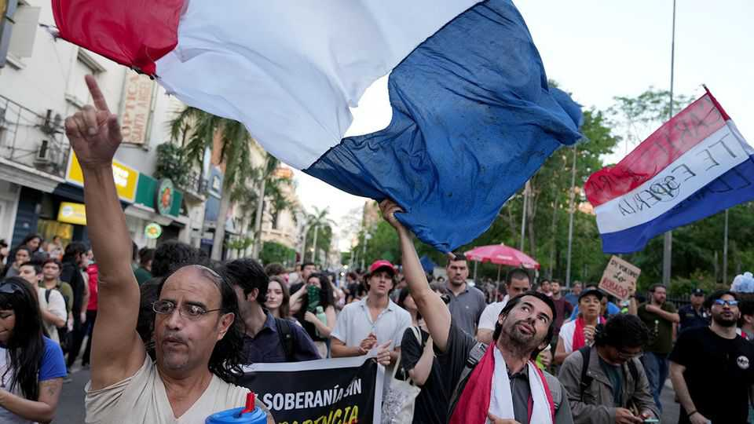

Paraguay’s swaggering digital bank has fallen
The president could be next

Nov 5th 2026
Editor’s note (November 5th): Shortly after this story was published Paraguay’s president, Santiago Peña, resigned.
Ueno Bank is ubiquitous in Paraguay. The bank sponsors stadiums, music festivals, the national football squad, a bar, and the country’s top racing driver. Its credit cards garner big cashbacks at supermarkets. Though it only received a full banking licence in 2023, the fintech startup now caters to 2.9m Paraguayans: almost two-thirds of the adult population. At craft fairs co-organised by the country’s first lady, glamorous Ueno promoters in tight jeans issue indigenous artisans with card readers.
For many Paraguayans, accustomed to keeping their cash under the mattress, Ueno helped them open their first bank account. Its branches offered touchscreens, frothy coffees and comfy sofas: a far cry from the awkward hours, staid decor, hefty deposit requirements and scowling security guards of competitors. Often likened to Monzo or Revolut, Ueno hoped to achieve a $1bn valuation and thus become Paraguay’s first unicorn.
That was until 3:23am on November 3rd, when the Banco Central del Paraguay (BCP, the central bank and banking regulator) seized control of Ueno and began to formally dissolve it. Police collared Ueno’s CEO, Miguel Vázquez, and took him to a high-security jail. Other executives from the bank were hooded and cuffed. They face charges including breach of trust, irregular book-keeping, and attempted fraud. Tearful depositors, frozen out of their savings, had to be held back from branches by the police. The BCP’s president Carlos Carvallo, himself Ueno’s boss until three years ago, resigned at the request of Paraguay’s president, Santiago Peña.
Protesters marched towards the presidential palace. The opposition said it was preparing to impeach Mr Peña, who until last year held shares in Ueno Holding, a related company. His vice-president, Pedro Alliana, also faces impeachment. In a video message, Mr Peña said that 98% of Ueno’s clients would get their money back through deposit insurance and that those responsible for the crisis would be punished: “The financial system is strong.”
Behind Ueno’s collapse lie a series of events that tarnished its youthful image. The bank’s share of government business has ballooned on Mr Peña’s watch. Around $850m of public money is now deposited with Ueno, including a tenth of the country’s public pensions funds. Itti, a sister company of the bank, handles reams of sensitive citizen data after winning more than a dozen state contracts. The president has “a direct responsibility” for the crisis, says Rafael Filizzola, a centre-left opposition senator. “This is a criminal conspiracy to use public funds in private businesses linked to Peña.” (Mr Peña has denied any wrongdoing.)
Also under scrutiny is fast-and-loose lending by Ueno itself. Last month it emerged that the bank had disbursed roughly $150m to small companies linked to its shareholders and employees, seemingly breaching regulatory rules and putting its own balance sheet at risk. Senators loyal to former president Horacio Cartes—whose family owns a different bank, and who has recently fallen out with Mr Peña—began to pile on pressure.
As the negative headlines multiplied and investors took fright, Ueno’s $350m bonds due in 2031, issued in March, lost around 12% of their value. Last week, the company announced a $100m recapitalisation. It was too little, too late. BCP officials said on Tuesday that Ueno’s solvency ratio has fallen below half the required minimum, and that its investigators had uncovered more irregularities.
“Uncertainty reigns,” says Esteban Caballero, a political analyst. The ruling Colorado Party controls both houses of Congress, but is split between supporters of the president and Mr Cartes, his former patron. A banking reserve fund has been authorised to reimburse Ueno’s clients up to the value of $38,000 within 15 days; lawmakers have voted to speed this up. Beyond that amount, the BCP will only offer “the greatest protection possible”. As for Ueno, another financial institution was recently rumoured to be negotiating over its acquisition. Some worry that biometric information Ueno gathered from its clients could be sold to the highest bidder. “This is sensitive data,” says Maricarmen Sequera of TEDIC, a digital-rights NGO.
Others fear the scandal could take the shine off South America’s star non-oil economy, which expanded by 6.6% in 2025. Unlike a crisis in 1995 that wiped out half of Paraguay’s banks, the broader financial system is safe, says Fernando Arriola, a former Wall Street banker and the director of Paraguay’s fintech chamber. But medium-sized companies that stored their cash with Ueno will suffer. “This will affect the market,” Mr Arriola adds, blaming regulators for being asleep at the wheel, Ueno for lending too generously to associates, and the president for failing to avoid perceptions of favouritism.
Mr Peña often calls Paraguay an “awakening giant”. If the sorry tale of Ueno is anything to go by, that colossus has feet of clay. ■